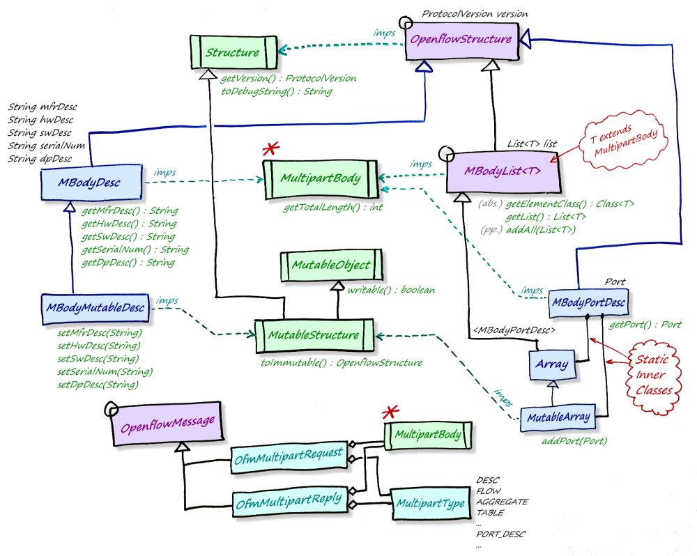

The following schematic illustrates the relationship of classes and
interfaces that make up a OfmMultipartRequest or
OfmMultipartReply. Note that two examples of concrete classes
are given:
MBodyDesc: representing the
multipart body of a MultipartType.DESC reply,
along with its mutable subclass.
MBodyPortDesc: representing a single
element of a MultipartType.PORT_DESC reply, along with
its inner classes Array (immutable) and
Mutable Array.
